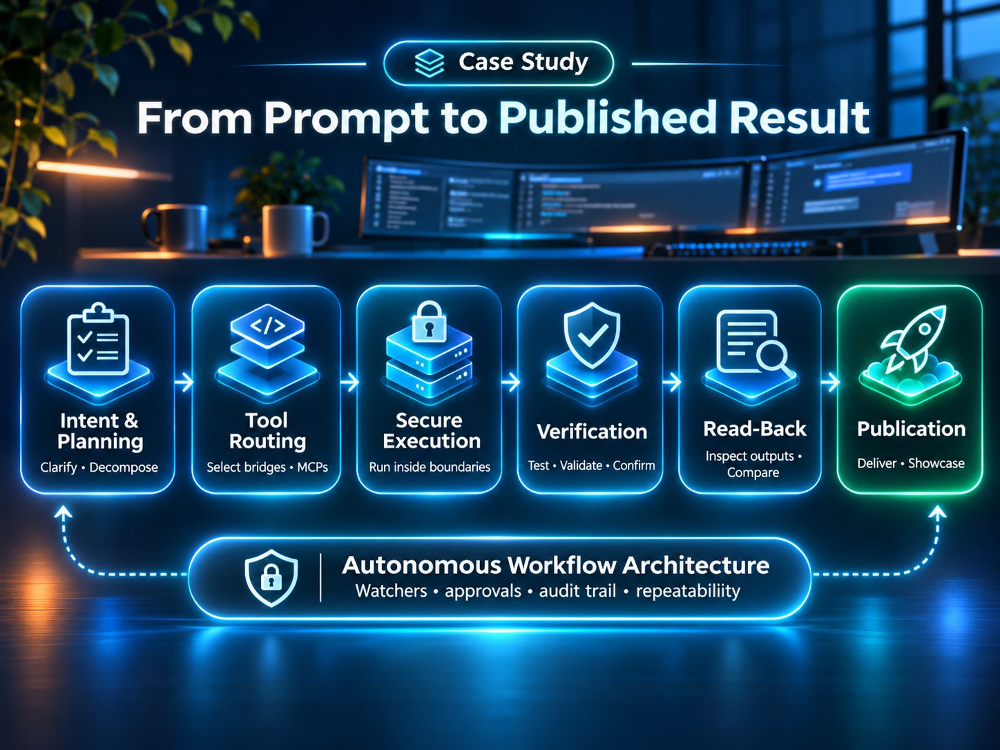

01 · Die technische Herausforderung
KI-gestützte Entwicklungsarbeit scheitert oft an den Übergängen zwischen eigentlich leistungsfähigen Werkzeugen: Ein Modell liefert eine plausible Antwort, aber die Datei liegt nicht auf dem Zielrechner; ein Browser ist geöffnet, jedoch in der falschen Windows-Sitzung; ein Agent meldet Abschluss, aber niemand hat das Ergebnis unabhängig kontrolliert.
Unser Ziel war kein grenzenlos selbstlaufender Agent. Entwickelt wurde ein wiederholbarer, durch den Auftraggeber gesteuerter Arbeitsweg, der vorhandene Nachweise liest, das am wenigsten eingreifende geeignete Werkzeug wählt, innerhalb klarer Freigaben arbeitet und überprüfbare Artefakte liefert.
02 · Rollen und Orchestrierung
Der Mensch legt Ziele fest und trifft Entscheidungen, für die seine persönliche Autorität erforderlich ist. ChatGPT übernimmt innerhalb eines aktiven Antwortdurchgangs Architekturkoordination, Integration und Qualitätskontrolle. Deterministische Aufgaben werden bevorzugt mit PowerShell, vorhandenen Gateways und überprüfbaren Skripten ausgeführt. Claude Code kann als genau ein klar begrenzter technischer Handwerker hinzukommen, wenn dies echten Mehrwert bietet. Codex, Poracode und Mehragentenversuche bleiben isoliert oder pausiert, solange keine neue fachliche Freigabe vorliegt.
Diese Trennung ist entscheidend: Aus einem KI-Vorschlag entstehen nicht stillschweigend unbegrenzte Produktivrechte. Ein aktiver Schreiber, eindeutige Zuständigkeit, dokumentierte Haltepunkte und unabhängige Rücklesung halten das System verständlich.
03 · Die technischen Schichten
Planung und Kontext: Auftragserkennung, passende Projektanleitungen, Haltepunkte und geschützte FINAL-GRÜN-Baselines; neue Entscheidungen basieren auf dem tatsächlich vorhandenen Stand statt auf unnötigen Wiederholungstests.
Ausführungsanbindung: Desktop Commander verbindet den autorisierten Windows-Entwicklungsrechner mit dem laufenden Chat. PowerShell, CLI und Git bearbeiten deterministische Aufgaben; eine eng begrenzte Windows-Bridge kommt nur dann hinzu, wenn die angemeldete grafische Oberfläche wirklich gebraucht wird.
Spezialisierte MCPs und Werkbank: Playwright, Browserdiagnose, ein projektbezogener Workflow-MCP und WordPress-/REST-Gateways liefern zusätzliche Fähigkeiten. Die bestehende TangoKunstWerk-Werkbank ist eine geschützte Projektumgebung und kein beliebiger, unbeschränkter Befehlsausführer.
Überwachung und Wiederanlauf: netzwerkbewusste Startprüfungen, begrenzte Wiederholungen, Prüfung der Windows-Sitzungsbereitschaft und ein eingeschränkter lokaler Autonomie-Wächter adressieren bekannte Betriebsprobleme. Das ist keine Garantie für einen universellen, fehlerfreien Dauerwächter.
Qualität und Freigabe: Prüfsummen, fachliche Tests, Browser-Sichtprüfungen, gezielte Regression und Veröffentlichungsschranken. Erst die unabhängige Kontrolle am Zielort macht aus einer Erfolgsmeldung einen belastbaren Abschluss.

04 · Der praktische Arbeitszyklus
1. Auftrag verstehen. Ziel, Freigabeumfang, gewünschtes Ergebnis, Datenschutz und mögliche Veröffentlichungspflicht feststellen.
2. Aktuellen Stand lesen. Bestehende Anleitungen und FINAL-GRÜN-Haltepunkte abrufen; abgeschlossene Arbeiten schützen.
3. Den besten sicheren Weg wählen. Zuerst native Dateien und deterministische CLI-Werkzeuge; die angemeldete Windows-GUI nur bei Bedarf.
4. Begrenzt ausführen. Genau ein Schreiber, korrekte Projektgrenze, keine zusätzlichen Rechte oder versteckten Abokosten.
5. Reale Ergebnisse abholen. Prozessende, Dateibytes, Anwendungsrückmeldungen und Fehlerberichte lesen statt Erfolg zu vermuten.
6. Fehler ursächlich beheben. Bei konkretem Fehler Ursache bestimmen, erlaubte Korrektur anwenden und gezielt nachprüfen.
7. Unabhängig prüfen. Hashes vergleichen, Dateien öffnen und bei Bedarf Desktop-/Mobilansichten kontrollieren.
8. Nur mit Freigabe veröffentlichen. Für konkrete Fassungen die ausdrückliche Schlussfreigabe respektieren und den tatsächlichen Abschluss dokumentieren.

05 · Die nachgewiesenen Ergebnisse
Ein isolierter 10/10-Integrationstest bestätigte die begrenzte lokale Werkzeugkette, das Schreiben und Rücklesen einer Sandbox-Datei, einen sicheren Stopp außerhalb des zulässigen Bereichs und die Übergabe an ein bestehendes Projektgateway. Dieser Test war ausdrücklich kein produktiver WordPress-Schreibtest.
Die Fernanbindung wurde nach einem echten PC-Neustart nachgewiesen; Desktop Commander war vor einer interaktiven Windows-Anmeldung wieder online. Weitere isolierte Prüfungen belegten die Windows-GUI-Zugriffsweiche unter bestimmten Sitzungsbedingungen, ohne daraus eine Zusicherung für jeden denkbaren Zustand abzuleiten.
Ein echtes Archiv mit 3.126.843 Bytes wurde über die autorisierte Plattformoberfläche direkt heruntergeladen, am Ziel gespeichert und anhand der SHA-256-Prüfsumme und aller acht ZIP-Einträge unabhängig geprüft. Der native Download vermied einen selbstgebauten Textblocktransport.
Anschließend wurde eine öffentliche Portfolio-Ergänzung über den freigegebenen Releaseweg veröffentlicht sowie durch Repository-Rücklesung und HTTPS überprüft. Die Browser-Sichtprüfung deckte Desktop und Smartphone in beiden Sprachen ab. Das sind konkrete Belege und keine statistische Garantie für null Fehler.
06 · Fehlerbehebung ohne Neuerfindung
Ein besonders aufschlussreicher Fehler war die Annahme, der Browser sei nicht zugänglich, weil der sitzungsneutrale Prozess seine Webelemente nicht sehen konnte. Der wiederhergestellte Weg verwendete die bereits autorisierte interaktive Windows-Sitzung, die passende Browser-Zugänglichkeitsschnittstelle und den regulären Downloadbefehl. Es wurden weder Zugangsdaten ausgelesen noch Anmeldeschranken umgangen oder eine zweite Fernsteuerungsarchitektur installiert.
Die dauerhafte Lehre: Erfolgreiche Verfahren müssen nach einem Chatwechsel wieder auffindbar sein. Andernfalls werden funktionierende Integrationen unnötig neu gesucht und getestet. Deshalb wurden versionierte Haltepunkte und ein verbindlicher zentraler Einstieg ergänzt.
07 · Sicherheits-, Datenschutz- und Freigabegrenzen
Projekttrennung verhindert, dass ein Test versehentlich zur Produktivänderung wird. Bestehende FINAL-GRÜN-Stände sind geschützte Ausgangspunkte. Sensible lokale Pfade, private Forschungsdateien, Tokens und Sicherheitskonfigurationen erscheinen nicht in der öffentlichen Dokumentation.
Vor GUI-Aktionen steht eine lesende Sitzungsprüfung. Temporäre Aufträge werden nach Abschluss entfernt. Der eingeschränkte Autonomie-Wächter ist kein universeller Skriptausführer. Für jede konkrete Veröffentlichung gilt die persönliche Schlussfreigabe des Auftraggebers; eine KI übernimmt keine eigenständige Konten- oder Entscheidungsgewalt.
Wichtig: Eine vollautomatische Reaktivierung des ursprünglichen ChatGPT-Chats nach Ende eines Antwortdurchgangs ist nicht nachgewiesen. Belastbar geprüft sind aktive, autorisierte Arbeitsdurchgänge und begrenzte technische Teilsysteme.
08 · Warum diese Architektur interessant ist
Die Fallstudie handelt von Systemintegration und nicht von der Erfindung eines neuen Sprachmodells. Bestehende Werkzeuge werden durch klare Grenzen, praktische Automatisierung und überprüfbare Abnahmekriterien zu einem tragfähigen Arbeitsprozess verbunden. Der Nutzen: weniger manuelle Zwischenarbeit bei gleichzeitig klarer menschlicher Kontrolle.
Der nächste sinnvolle Entwicklungsschritt besteht nicht darin, jede Freigabe abzuschaffen. Wiederholbarkeit, Beobachtbarkeit und Übergaben werden verbessert – jede Erweiterung zunächst isoliert geprüft, bevor sie produktiv eingesetzt wird.
09 · Eigener Beitrag und KI-Unterstützung
Ich habe die Arbeitsprinzipien konzipiert, Werkzeuge ausgewählt und koordiniert, Freigabegrenzen festgelegt und die unabhängige technische Abnahme eingefordert. Implementierung, Skripte, redaktionelle Aufbereitung und Fehlersuche erfolgten KI-unterstützt. AI Solutions Architect ist mein berufliches Ziel, keine von mir bereits ausgeübte Berufsbezeichnung.
Geltungsbereich der Nachweise
Das System ist weder als absolut störungsfrei noch als grenzenlos autonom zertifiziert. Konto-, Berechtigungs-, Schnittstellen- und Ressourcenlimits bleiben bestehen. Produktivaktionen unterliegen konkreten Freigaben. Aussagen beziehen sich ausschließlich auf die dokumentierten Tests und Veröffentlichungen.
Technische Vertiefung nach persönlicher Anfrage
Ausgewählte Architektur-Dossiers enthalten weiterführende Entscheidungsgrundlagen, Sicherheitsgrenzen und Testnachweise. Für einen beruflichen Austausch kann ein persönlicher Zugangslink angefragt werden; Zugangsschlüssel und private Steuerungswege werden hier nicht veröffentlicht.
Technischen Austausch anfragenDiese Fallstudie als PDF